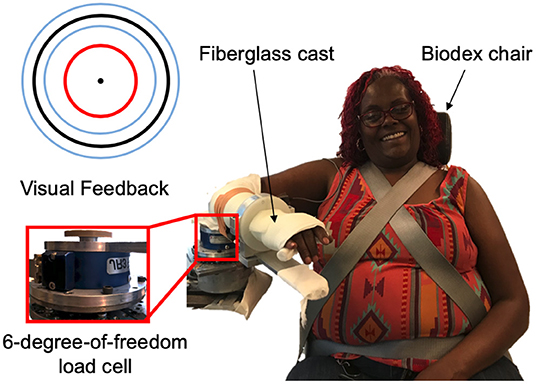
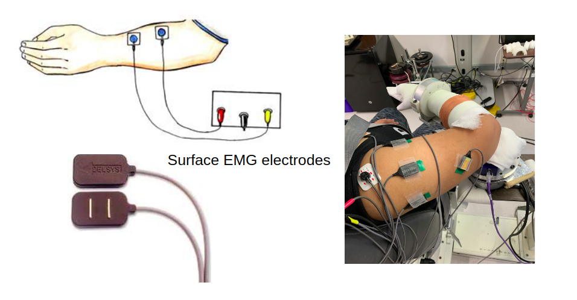
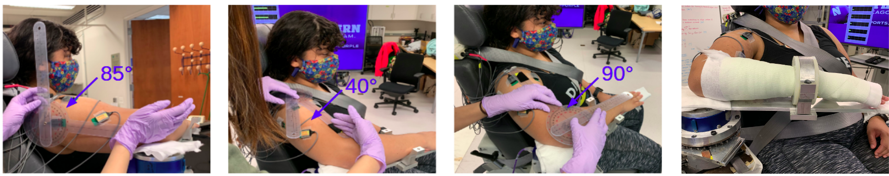
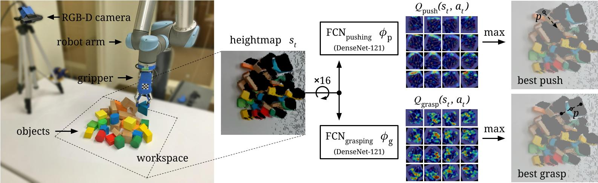
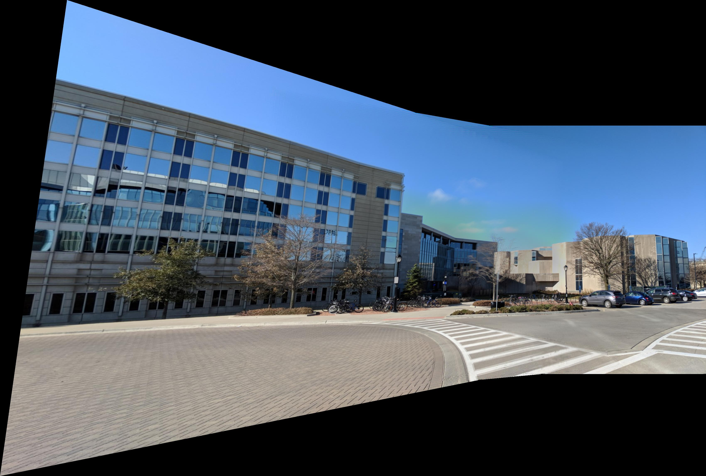
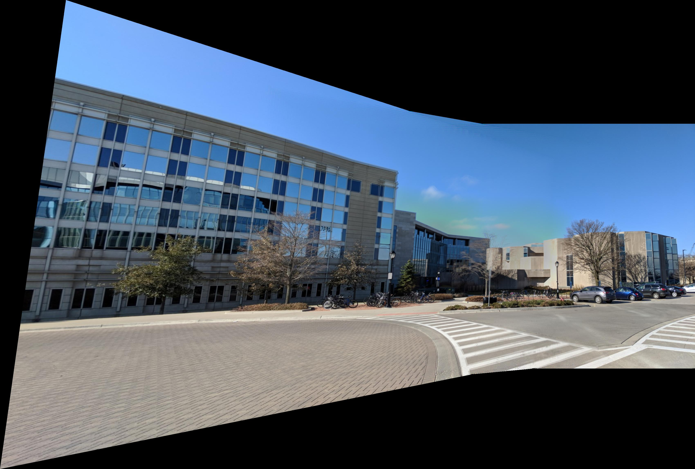
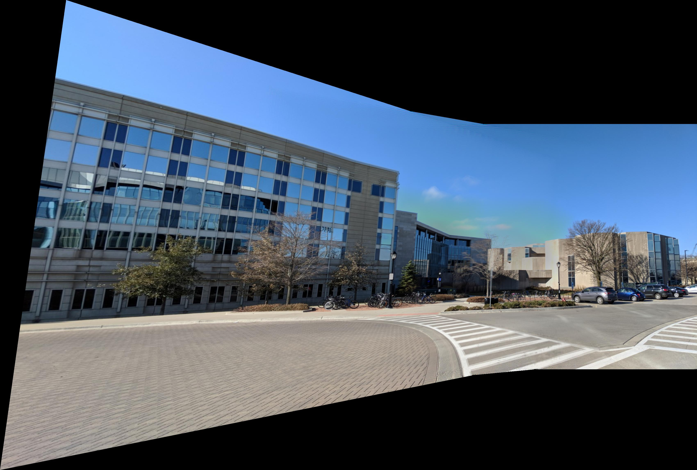

Unsupervised Learning | Biomedical Science Using Nonnegative Matrix Factorization to Identify Muscle Synergies During a Multi-Joint Task
Healer Baxter
Deep Learning | CV | Motion Planning Baxter Robot play the piano based on detected human emotion
Terminator
ROS | CV | Motion Planning Baxter Robot pick up a nerf gun, locate a cup, pull the nerf gun trigger to shoot the cup when given a user input, and move to a final pose
Mobile Manipulation
Manipulation | Motion Planning KUKA youBot to pick up a block at the start location and carry it to the desired location in the simulation software V-REP
Visual Pushing and Grasping
Deep Reinforcement Learning | Docker Train robotic agents to learn to plan pushing and grasping actions for manipulation with deep reinforcement learning
ImageMosaic
Computer Vision Create an image panorama by stitching a set
of images together
Pin-triangle Dynamics Simulation
Dynamics | Simulation Simulation of a triangle bouncing in the enclosed rectangle
This project aims to identify how muscles are synergistically activated at the arm during a multi-joint task.
Motivation
Figure 1
While seemingly simple, a motor task, such as retrieving an object from a high shelf, is very complicated. To achieve this task, movement-related signals
are generated from the motor cortex of our brain and relayed to muscle fibers via motor neurons. In turn, muscles contract and the arm is raised and extended.
There are more than 600 muscles in our body. Instead of controlling each muscle individually, our brain is thought to recruit these muscles in set groups.
The activation of muscles in this grouped manner is termed muscle synergies and is part of a hierarchical control strategy. Activation of muscle synergies,
rather than individual muscles, allows for a simplified control of one’s limb. In this work, the focus is on muscle activation at the arm. Specifically,
the goal is to determine how muscles concurrently activate when an individual abducts at the shoulder and flexes at the elbow. As such, we can determine
normal muscle activation patterns in a population that is neurologically and orthopaedically intact.
Hypothesis
For a task involving abduction at the shoulder and flexion at the elbow, the main muscles involved are the biceps, triceps lateral, anterior deltoid, medial
deltoid, posterior deltoid, pectoralis major, lower trapezius, and middle trapezius. Based on the muscle synergy hypothesis, we would expect to observe at
least two synergies for this task: one that is mainly responsible for the elbow flexion and one for shoulder abduction.
Figure 2
Experimental Setup

Figure 3 [1]
The experimental setup, as shown in Figure 3, was comprised of a custom mechatronic system, a monitor, speakers, and Biodex chair. The system acquires torque data from a six-degree-of-freedom load cell. The acquired data, in conjunction with a
biomechanical model, indicate the extent to which the participant flexes about the testing elbow and abducts about the shoulder. In addition, the system
quantifies muscle activity using eight surface electromyography (sEMG) electrodes (sEMG1: biceps, sEMG2: triceps lateral, sEMG3: anterior deltoid, sEMG4:
medial deltoid, sEMG5: posterior deltoid, sEMG6: pectoralis major, sEMG7: lower trapezius, and sEMG8: middle trapezius). The sEMG signals indicate the
electrical activity within each of the eight testing muscles. A DAQ card acquires data from these sensors, and a Matlab program streams the data. Data
is collected at 1kHz.

Figure 4
Participants
Data were collected from one male and three female participants. Participants were all right-hand dominant, and their mean ± standard deviation age was 26 ± 3 (range: 22-29)
Experimental Procedures

Figure 5
The participant was requested to not exercise the day before and of testing to avoid muscle fatigue. At the beginning of the testing session, the participant
sat with their torso and waist strapped to the Biodex chair. The participant's testing arm was affixed to an isometric measurement device at 85° shoulder
abduction, 40° shoulder flexion, and 90° elbow flexion.
Baseline Task
This task was completed when the participant was relaxing without generating any torques with their right arm.
Maximum Voluntary Torque Generation Task
The participant was asked to maximally activate each of the eight muscles and the maximum sEMG data was obtained for each respective muscle.
Isometric Torque Generation Task
The participant was asked to flex about their elbow to 25% of their maximum voluntary torque in elbow flexion. This task was completed when abducting to two different shoulder abduction loads: 10% and 50% of their maximum voluntary torque in shoulder abduction. When the participant achieved desired shoulder abduction and elbow flexion torques, they were asked to maintain the desired torque for two seconds. For each shoulder abduction load, the participant performed 10 trials. During the two-second hold period, we extracted 0.5s of data for subsequent data analyses.
Demo
Data Analysis
sEMG Preprocessing
Baseline sEMGs were first obtained when the participant was relaxing without generating any torques with their right arm. To remove baseline voltage drift, first the mean baseline sEMG signal for each sEMG channel was identified from the data acquired in the baseline task. Following, this mean baseline sEMG signal was subtracted from the corresponding channel’s sEMG data acquired throughout each isometric torque generation trial. Next, the sEMG signals were rectified and averaged over a 0.5 seconds interval. Then, EMG data were normalized to the maximum to ensure that subsequent synergy extraction from preprocessed EMGs was not biased towards muscles with higher output. EMG data for each trial were stored in eight-column matrices and then were concatenated across the twenty trials.
Muscle Synergy Identification
Figure 6
A custom python program identifies the underlying muscle synergies that explain the patterns observed in the eight activated muscles during the
isometric torque generation task. The program was designed to process the collected sEMG data and apply a matrix factorization algorithm to
decompose the EMG signals. The unsupervised learning method we employed was nonnegative matrix factorization(NMF), an approach that has been
previously used in literature (Lee and Seung 1999).
The sEMG data we collected was split into a training set and a testing set by randomly holding out 20% of the data as testing data and leaving
80% as training data.We used mean square error (MSE) to evaluate the error in the training set and testing set during each NMF update iteration.
MSE was calculated as the squared residual: MSE =| sEMG -W·S |². where sEMG was a 20 (number of trials) by 8 matrix containing the 8 EMGs (of unit magnitude) in each row and W was a 20 by K (number of
synergies) matrix, with each row containing the synergy activation coefficients for a specific trial. S was a K by 8 matrix, with each
row containing the synergy activation strength for each of the 8 muscles.
A goal in our approach was to prevent overfitting the data, as well as ensuring the selection of the minimum number of muscle synergies that can explain the observed muscle activation patterns. Therefore, we included the following procedures. We first evaluated how the derived muscle synergies can explain the observed pattern by using the variance accounted for (VAF). VAF is defined as:
VAF = 100 * (1- SSE / SST). where SSE was the sum of the squared residuals and SST was the sum of the squared EMG data. This approach requires that adding another synergy increases the mean global VAF by at least 3% (Jinsook 2013).
Results
Number of Muscle Synergies Selected
Figure 7
The training error and testing error were plotted based on the collected data. As the number of muscle synergy increases,
the mean squared error of the training set decreases. Therefore, the synergies selected seemingly better explained the data
with an increased number of muscle synergies. However, it is possible that the reduced mean square error of the training set
is due to overfitting of the data in the training set. As such, we needed to determine whether the same trends occurred in the
testing set.
The mean squared error of the testing set error based on the two, three, and four muscle synergies, respectively, that were extracted in the training set, were similar. As such, this points to the decrease in the mean squared error in the training set arising due to an overfitting of the training set data. This overfitting indicates that MSE is not an effective measure to evaluate the outcome of the NMF algorithm.
Table 1
Previous studies (Jinsook 2012) identifying muscle synergies used VAF to judge the performance of the sEMG signals decomposition.
Therefore, we adopted this approach of using VAF to estimate the number of muscle synergies. Table 1 outlines the VAF obtained for
the two motor tasks tested in this study. Our requirement was that the addition of another synergy increases the mean global VAF
by at least 3%. Hence, the number of muscle synergies selected for the 10% shoulder abduction load task was four and for the 50%
shoulder abduction load task was two.
Muscle Activation Patterns
Normalized Muscle synergy when shoulder abduction load is 10% MVT Shoulder abduction
Figure 8
There are four muscle synergies decomposed from the sEMG signals collected during the motor task when participants flexed
about their elbow to 25% maximum voluntary elbow flexion and abducted about their shoulder to 10% maximum voluntary shoulder
abduction. As shown in Figure 8, synergy group 2 has strong involvement of the anterior deltoid and middle trapezius muscles
which are responsible for shoulder abduction. Synergy group 4 primarily consists of the triceps brachii muscle, which was not
expected. A rationale for why the triceps were activated is to stabilize the arm by increasing its stiffness. Synergy group 1
has strong biceps and lower trapezius components, suggesting that the lower trapezius may have coactivated during elbow flexion.
Synergy group 3 has strong involvement of the pectoralis major and lower trapezius muscles. These muscles play a role in stabilizing
the shoulder joint. As a result, the muscle activation patterns during this task demonstrates that elbow flexors, shoulder abductors,
and their respective antagonists are recruited in synergistic groups.
Normalized Muscle synergy when shoulder abduction load is 50% MVT Shoulder abduction
Figure 9
There are two muscle synergies decomposed from the sEMG signals collected during the motor task when participants flexed about their
elbow to 25% maximum voluntary elbow flexion and abducted about their shoulder to 50% maximum voluntary shoulder abduction. As shown
in Figure 9, synergy group 1 has a strong biceps component, as well as lower trapezius component, and synergy group 2 has a weak
biceps component and a lower trapezius component. This two-synergy-group result didn't fully align with the initial hypothesis, but
still showed that synergy group 1 mainly explains the elbow flexion and synergy group 2 mainly explains the shoulder abduction.
Comparison of muscle activation patterns between the two tasks
Results of our NMF algorithm demonstrated that four muscle synergies are necessary for reconstructing sEMG signals during the task with a small shoulder abduction load (10% MVT), while only two are needed for the task with a large shoulder abduction load (50% MVT). This result can be supported by the principles underlying muscle recruitment. A motor task requiring high effort and large torque output often involves a gross activation of multiple muscles at once. On the other hand, for a task requiring less net torque output, it is often necessary to use antagonistic muscles to stabilize and maintain the torque output within the desired range.
Reference
[1] Cai NM, Drogos JM, Dewald JPA and Gurari N (2019) Individuals With Hemiparetic Stroke Accurately Match Torques They Generate About Each Elbow Joint. Front. Neurosci. 13:1293. doi: 10.3389/fnins.2019.01293
[2] Lee DD and Seung HS. Learning the parts of objects by non-negative matrix factorization. Nature 401: 788 –791, 1999.
[3] Jinsook Roh, William Z. Rymer, Eric J. Perreault, Seng Bum Yoo, and Randall F. Beer. Alterations in upper limb muscle synergy structure in chronic stroke
survivors. J Neurophysiol. 2013 Feb 1; 109(3): 768–781.
This project aims to use deep learning and manipulation platform to train a two-armed robot to play the piano based on the human emotion.
Motivation
We live in an era in which communication seems simpler than any times, a friend is only one text away or one video chat away. Although communication may be easier and faster, people still feel lonely and depression rates have largely increased. Inspired by this circumstance, this project is to design a system that would enable the Baxter Robot to detect the negative emotion of its master and play songs on the piano using both hands to help him/her get rid of the bad feelings.
Emotion Detection
1. Data Pre-processing
The datasets are composed of 35887
training and testing samples. The training
samples are then divided into two sets namely;
Training Set and Validation Set. Training set
samples composed of 80% of the original dataset
samples and 20% of the samples are specified for
validation. Hence Training Set and Validation Set
will be 22966 and 5741 respectively.
Preprocessing is performed to prepare images for
the feature extraction stage. A set of facial feature
points is extracted from the images then facial
features derived from these points. Different sets
of facial features are used for both training and
validation classifiers.
2. Data Augmentationg
In order to avoid overfitting and improve
recognition accuracy I applied data
augmentation techniques on each training samples. For each image I performed
following transforms:
a. Rescale (1. / 255)
B. Rotation (30)
b. Shear (0.3)
c. Zoom (0.3)
d. shift(width:0.4,height:0.4)
e. Flip (horizontal)
3. Proposed CNN Model
The CNN Model I built takes the input grayscale image size of 48*48 pixels. This model architecture is composed of 5 layers. These layers
contains 5 convolutional layers and 5 max pooling layers along with 2 fully connected layer and the output layer. The
output layer consists of 5 neurons corresponding to 5
emotional labels: Angry, Happy, Neutral, Sad and Surprise. This model uses Rectified Linear Unit (relu) as most precisely used
activation function which is applied on all the Convolution
Layer and Dense Layer except the last layer (output layer)
which is actually Softmax Function. Dropout Layer is also
applied after each Convolution, Max Pooling and Dense
Layer with the rate of 0.25
Emotion Detection Demo
Piano Playing
The detected emotion would be written in a text file using basic pyhton I/O function. The piano playing node keep reading this text file and when the emotion "sad" is detected and written in the file, baxter would start playing the piano
Locate keys using AprilTags
Use pose infomation of the two apriltags in left_arm frame to compute the poses of keys in the baxter base frame
The goal of this project is to enable Baxter Robot pick up a nerf gun, locate a cup, pull the nerf gun trigger to shoot the cup when given a user input, and move to a final pose.
Action Sequence
1. Baxter goes through initial calibration and start up sequence. Arms are moved to an initial pose.
2. Baxter finds the nerf gun using an AprilTag and its left arm camera
3. Baxter moves its left arm to line up with the nerf gun and closes its gripper to pick up the gun
4. Once Baxter has the gun, it uses its left arm camera to find a cup using darknet
5. Baxter keeps moving its left arm until the cup is in the center of the image produced by the camera
6. Baxter moves its right arm to put its grippers around the nerf gun trigger
7. Baxter waits for a user input to confirm the firing of the gun
8. Baxter keeps waiting until the user tells it to fire
9. Baxter pulls the trigger using its right gripper
10. Baxter moves to a final pose right after shooting
The goal of this project is to drive the KUKA youBot to pick up a block at the start location, carry it to the desired location, and put it down in the simulation software V-REP. The project covers the following topics: 1. Plan a trajectory for the end-effector of the youBot mobile manipulator. 2. Generate the kinematics model of the youBot, consisting of the mobile base with 4 mecanum wheels and the robot arm with 5 joints 3. Apply feedback control to drive the robot to implement the desired task 4. Conduct the simulations in V-REP
Most grasping algorithms today often fail to handle scenarios where objects are tightly packed together. They can attempt bad grasps repeatedly to no avail since they can only find accessible grasps. This project proposed to discover and learn synergies between pushing and grasping from experience through model-free deep reinforcement learning.
System Overview

Model Input & Output
The Q-function is modeled as two feed-forward fully convolutional networks(FCNs) Φp and Φg. FCN Φp is for pushing motion primitive behavior and FCN Φg is for grasping.
For each individual FCN Φψ:
Input: the heightmap image representation of the current state
Output: a dense pixel-wisemap of Q values with the same image size and resolution as that of the state
Note: each individual Q value prediction at a pixel p represents the future expected reward of executing primitive ψ at 3D location q where q→p ∈st.
The goal of this project is to Create an image panorama by stitching a set of images together
Image Registration
I used SURF to do the feature point extraction and matching, then used random sample consensus(RANSAC) for transform matrix estimation
Image Warping
Use the derived transform matrix nad project that warped image on a plain surface
Image Blending
Using Center-Weighting algorithm (compute the the distance from each pixel to 4 boundaries of the image and take the the smallest ratio
between two distances and the dimension of image as the corresponding pixel
value on mask matrix). The mask we derived is shown in the following image:
For each image, I derive a mask and then warp the mask just as warp the image
Cropping
After doing image stitching and image blending, I get the panorama look as following

Use pythong to find the largest rectangle that don’t include the black region in the
panorama image, I get the final panorama look as following
This project is a dynamics simulation of a triangle bouncing in the enclosed rectangle. This project shows techniques expansion from theory and ability of building physical model.
dynamic model
The pictured pin-triangle is a constrained system involving 2 bodies: a equilateral triangle and a square. the triangle has length d = 3, mass m =0.5 and rotational inertia J=1 (assuming that the center of mass is at the center of geometry). The square has length D = 20, mass M = 5 and rotational inertia J=3 (assuming that the center of mass is at the center of geometry). The triangle has configuration (x,y,\theta_t) and the square has an angle \theta_s relative to the world frame. The triangle is constrainted to not bounce out of the square.


 
